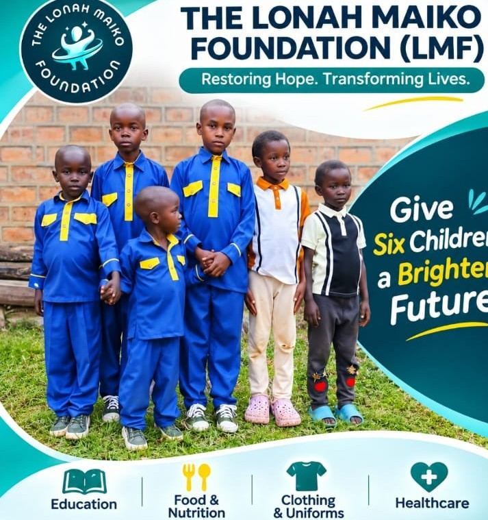
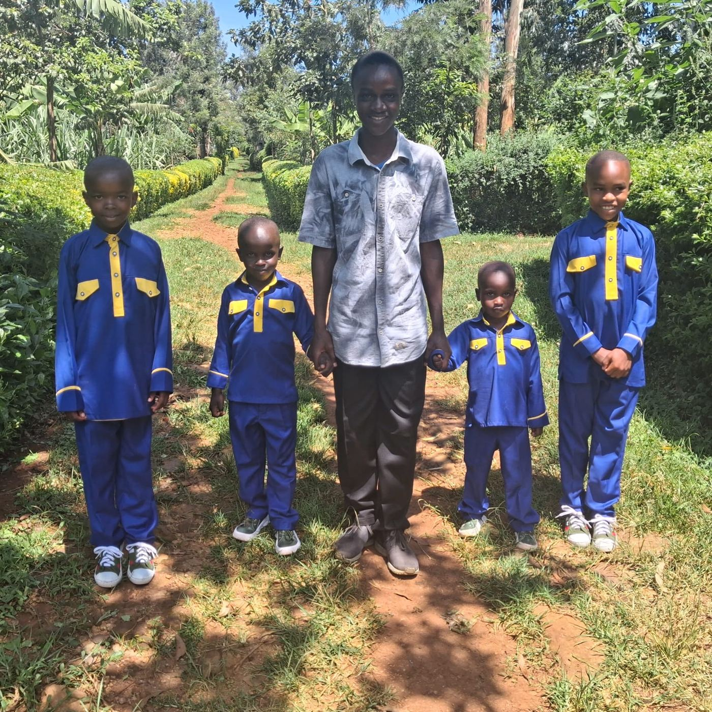
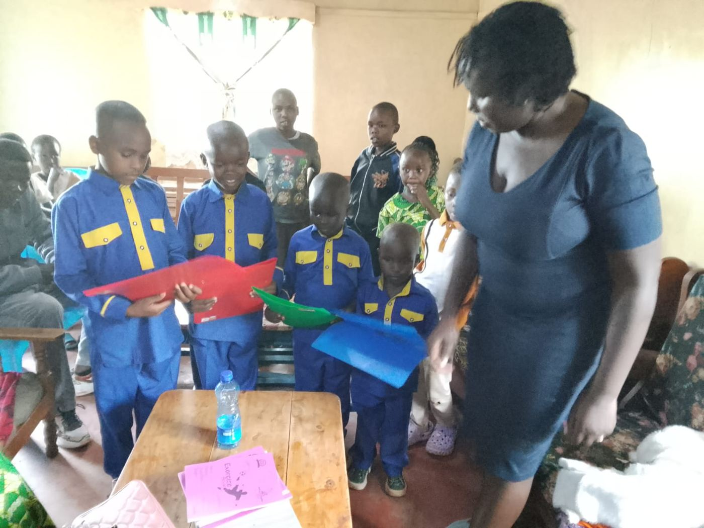
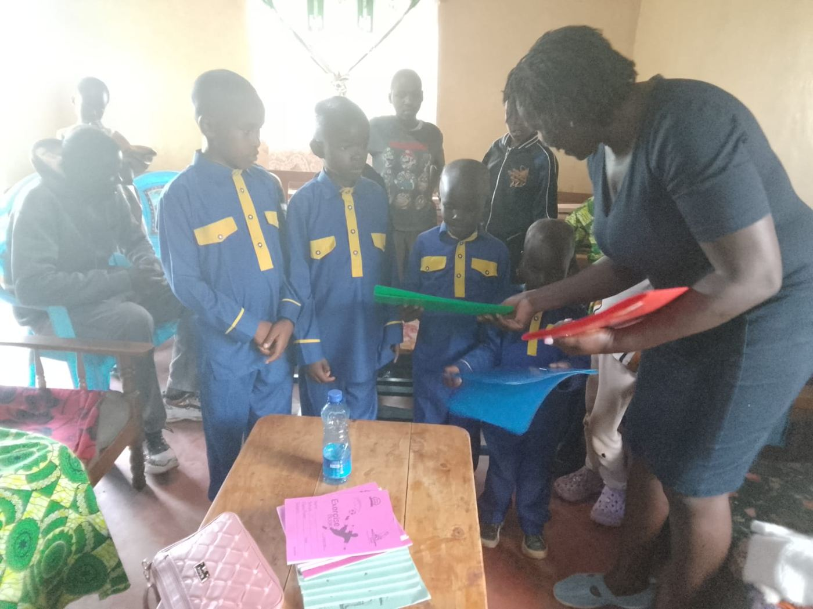
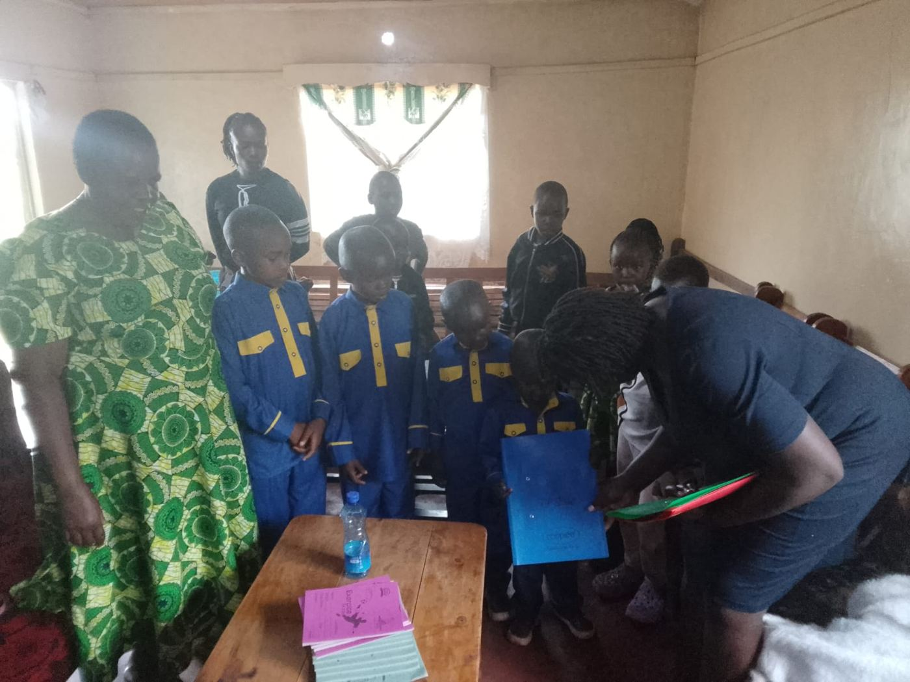
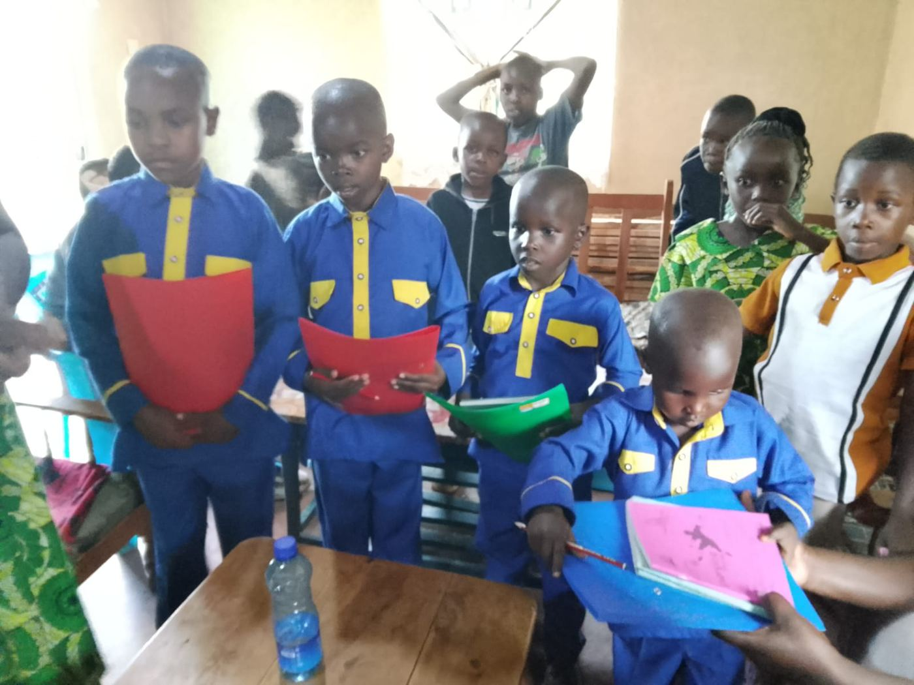
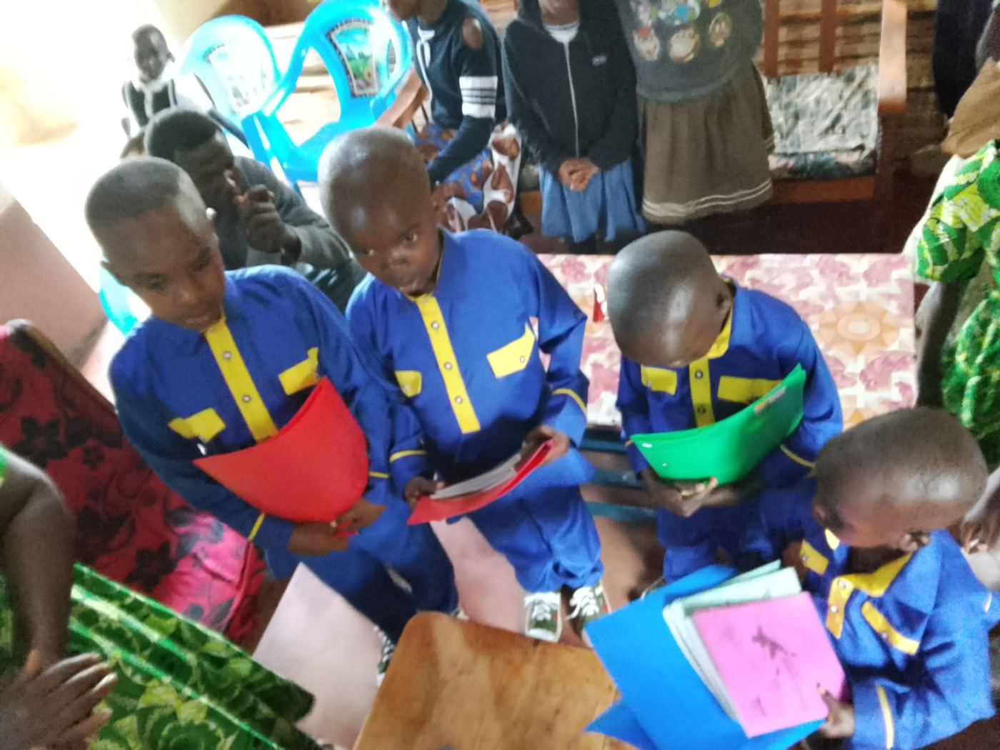
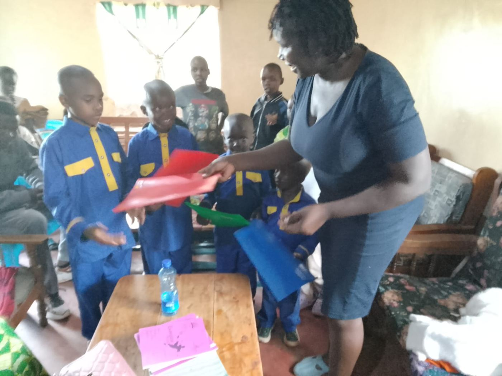

Restoring Hope, Reuniting Families
Six children. One family reunited. A new beginning.
The Lonah Maiko Foundation (LMF) intervened to support six children—four boys and two girls—who had been left without care after their family faced very difficult circumstances.
The children had been moving from door to door, seeking food and shelter. Through LMF's intervention, all six were reunited with their grandfather, who had never known they existed.
All six children are now safe and cared for, and the girls are protected from Female Genital Mutilation (FGM).
For these six children, the change is already visible. They now have a home, a family who knows them, and adults who are looking out for them. With new uniforms, folders and exercise books, they are ready to take their place in the classroom alongside other children their age.
Protecting girls from FGM is at the heart of LMF's work in Nyamira County. This December, we are hosting a seven-day residential empowerment and protection programme for 300 girls in Ikonge, offering a safe and positive alternative during the holiday season when girls face the greatest risk. Learn about the December appeal →
Our work continues. The children need support with education, food, clothing and daily upkeep. We invite well-wishers, donors and partners to join us in giving them a brighter future.
How you can help
- Education: school fees, books and stationery so all six can stay in school.
- Food & nutrition: regular, healthy meals for growing children.
- Clothing & uniforms: everyday clothes, shoes and school uniforms.
- Daily upkeep & healthcare: helping their grandfather care for them day to day.
Every contribution, big or small, goes towards giving these children the stable, hopeful childhood they deserve. Give by M-Pesa to 0705 834 784 (LONAH MAIKO), or contact us at lonah@thelonahmaikofoundation.com to offer other support.
“Sometimes changing a child's world doesn't begin with millions of money. It begins with showing up, extending a hand, and reminding them that their dreams matter. Every child deserves a chance.” ❤️
No child should be forgotten, abandoned or left behind.
THE LONAH MAIKO FOUNDATION (LMF)
Restoring Hope. Transforming Lives.